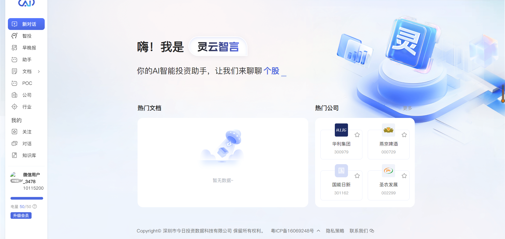

Break unclear requirements into scoped deliverables, success criteria, and readable execution steps.
AI Product Operator
Build Agents Into Working Systems
I turn AI product ideas into launch-ready workflows, operator-friendly systems, and proof-driven project experiences across analysis, content, and delivery.
Start ExploringEnglish-first portfolio site inspired by premium AI product launch pages.
Workflow Architecture
Agent Stack
Model Series
Built around real AI product operations, this system combines requirement parsing, agent design, workflow routing, output control, and launch packaging. I do not stop at generating answers. I turn vague requests into structured execution paths that teams can review, users can understand, and products can actually ship with confidence.
Requirement Parsing
Agent Routing
Workflow Control
Quality Review
Launch Packaging
Build multi-step systems where each node has a job, a standard, and a clean handoff to the next step.
Turn internal AI execution into demos, assets, and user-facing experiences that feel product-ready.
Capability Showcase
Three Systems, One Product Mindset
Instead of listing generic skills, this section behaves like a product capability page. Each tab shows how I frame the goal, define the workflow nodes, and shape the final result into something a team can review, launch, and understand.
01 / Analysis Agent
Structured AI Analysis Systems
Designed agent flows that transform complex information into readable analysis, decision support, and stakeholder-facing output. The system starts with scope, moves through defined roles, and ends with validation plus delivery control.
-
Task framing
Define the real question, output shape, and reading context before generation starts.
-
Role-based routing
Split work across research, reasoning, and review so each step has a clear job.
-
Readable delivery
Package the result in a format that supports decisions instead of producing raw text.
Output schema
Review checkpoints
Decision-ready summaries
Active Stack
Research · Review · Output
Analysis That Looks Ready To Ship
From problem definition to final summary, the flow stays structured enough for teams and polished enough for end users.
Step 01
Clarify the brief
Turn fuzzy needs into a concrete scope, lens, and final output standard.
Step 02
Route the work
Assign agents or steps for search, synthesis, comparison, and review.
Step 03
Validate quality
Check claims, trim noise, and make the result easier to trust.
Step 04
Shape the delivery
Present a final answer that works for operators, managers, or end users.
02 / Content Workflow
Content Production Workflows
Built repeatable systems for topic selection, generation, editing, packaging, and publishing so content work becomes a workflow rather than a one-off effort.
-
Topic intake
Collect signals, references, tone requirements, and publishing goals before writing.
-
Workflow standardization
Use fixed nodes for outline, draft, rewrite, formatting, and distribution handoff.
-
Consistency at speed
Reduce randomness so content quality stays stable even when output volume grows.
Ideation to publish
Prompt tuning
Publishing handoff
Workflow Board
Signal · Draft · Edit · Ship
Content As A Controlled System
Every stage has a purpose, an owner, and a quality checkpoint, which makes content work easier to scale and easier to evaluate.
Node 01
Signal Capture
Collect topics, platform context, and audience intent before drafting begins.
Node 02
Draft Generation
Generate first-pass structure that already respects message hierarchy and tone.
Node 03
Humanized Editing
Clean weak phrasing, sharpen logic, and adjust for platform-specific readability.
Node 04
Packaging & Publish
Prepare the final format, CTA structure, and release-ready publishing asset.
03 / Launch Prototype
AI Product Showcase Prototypes
Turned concepts into deployable pages and demos so a product idea could be seen, tested, explained, and improved before full rollout. The goal is fast clarity, not just fast code.
-
Fast 0-to-1 execution
Build working prototypes quickly enough to keep momentum while ideas are still fresh.
-
Product storytelling
Use layout, motion, and sequencing to explain what the product is and why it matters.
-
Review-ready delivery
Package the prototype so stakeholders can discuss, test, and iterate with less friction.
Static deployment
Demo storytelling
Iteration loops
Prototype Layer
0 to 1 Delivery
Idea to Page
Turn raw concepts into deployable experiences that can be reviewed and improved before a full build.
Landing page
Motion polish
Demo handoff
Layer 01
Visual direction
Choose a clear design language so the idea already feels like a real product.
Layer 02
Deployable asset
Keep the final output simple to host, easy to demo, and safe to iterate on.
Layer 03
Feedback loop
Make the prototype useful for review instead of treating it as a disposable draft.
Execution Scenes
Where My Workflow Thinking Creates The Most Value
The strongest use case for my work is not a single tool. It is the moment when product structure, intelligent agents, and user-facing execution all need to operate together. This section shows the scenes where that combination matters most.
Scene 01 / Product + Workflow + Delivery
Build the system, then make the system easy to understand
I create the most leverage when a team needs more than prompt usage: requirement parsing, agent structure, operational flow, and launch-facing presentation all need to work together at the same time.
Agent architecture
Readable outputs
Launch storytelling
When a product has useful capabilities but users still do not understand how to start, I help structure the path from first touch to first successful use.
Need
Clear entry path
Output
Onboarding logic
When content teams need speed without losing structure, I build pipelines that connect topic intake, generation, editing, and publishing delivery.

Need
Repeatable content flow
Output
Systemized production
When a concept is still abstract, I make it visible through fast pages, mock product stages, and review-ready demos that accelerate feedback.
Need
Visible prototype
Output
Discussion-ready demo
Experience
Built Through Product, Content, and Execution
My experience sits at the intersection of AI product operations, content systems, and operator-facing delivery. That combination helps me bridge product ideas and practical rollout.
2026.01 - 2026.03
AI Product Operations Intern Today Investment Technology
- Improved product onboarding and access flows around finance plugins and MCP services.
- Participated in agent building, prompt design, knowledge integration, and workflow tuning.
- Created user education materials to improve activation, retention, and product understanding.
2025.12 - 2026.03
Agent & Workflow Builder Independent Projects
- Used tools such as Coze and Dify to build workflows for analysis and content generation use cases.
- Translated product needs into agent tasks, workflow nodes, and structured deliverables.
2025.02 - 2025.05
Content Operations Intern Perfect World
- Worked on short-form content strategy, scripting, performance review, and campaign execution.
- Built a stronger understanding of conversion logic, user needs, and cross-functional delivery.
Contact
Looking for an AI Product Operator who can actually build the workflow?
I am most valuable in roles where product thinking, intelligent agent structure, workflow design, and launch execution need to work together. If that is the brief, I would love to talk.